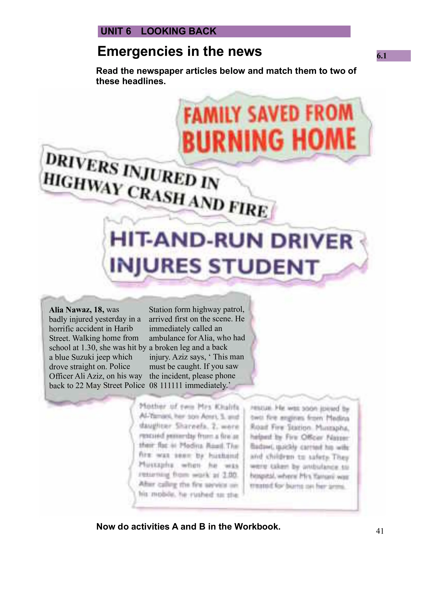

UNIT 6 LOOKING BACK 6.1 Emergencies in the news Read the newspaper articles below and match them to two of these headlines. 1) FAMILY SAVED FROM BURNING HOME 2) DRIVERS INJURED IN HIGHWAY CRASH AND FIRE 3) HIT-AND-RUN DRIVER INJURES STUDENT Article 1: Alia Nawaz, 18, was badly injured yesterday in a horrific accident in Harib Street. Walking home from school at 1.30, she was hit by a blue Suzuki jeep which drove straight on. Police Officer Ali Aziz, on his way back to 22 May Street Police Station form highway patrol, arrived first on the scene. He immediately called an ambulance for Alia, who had a broken leg and a back injury. Aziz says, ‘ This man must be caught. If you saw the incident, please phone 08 111111 immediately.’ Article 2: Mother of two Mrs Khalifa Al-Yamani, her son Amri, 5, and daughter Shareefa, 2, were rescued yesterday from a fire at their flat in Medina Road. The fire was seen by husband Mustapha when he was returning from work at 2.00. After calling the fire service on his mobile, he rushed to the rescue. He was soon joined by two fire engines from Medina Road Fire Station. Mustapha, helped by Fire Officer Nasser Badawi, quickly carried his wife and children to safety. They were taken by ambulance to hospital, where Mrs Yamani was treated for burns on her arms. Now do activities A and B in the Workbook.
Station form highway patrol (form خطأً مطبعياً بدل from)، ووُجدت مسافة زائدة بعد علامة التنصيص في ‘ This man، وقد حُفظ النص المطبوع حرفياً.[
{
"num": 1,
"question": "1 When did each incident happen?",
"model_answer": "Story 1 (car accident): yesterday at 1.30. Story 2 (flat fire): yesterday at 2.00.",
"explain_ar": "ورد التوقيت (yesterday at 1.30 / at 2.00) في كل خبر."
},
{
"num": 2,
"question": "2 Which emergency services came to each emergency?",
"model_answer": "Story 1: Police Force (Police Officer Ali Aziz) and ambulance / medical services. Story 2: Fire Service (two fire engines & Fire Officer Nasser Badawi) and ambulance / medical services.",
"explain_ar": "الشرطة والإسعاف في الأول، والإطفاء والإسعاف في الثاني."
},
{
"num": 3,
"question": "3 What do you know about the people who were helped?",
"model_answer": "Story 1: Alia Nawaz, an 18-year-old student walking home from school in Harib Street. Story 2: Mother of two Mrs Khalifa Al-Yamani, her son Amri (aged 5), and her daughter Shareefa (aged 2), living in a flat in Medina Road.",
"explain_ar": "الأسماء والأعمار والصفة كما وردت في الخبرين."
},
{
"num": 4,
"question": "4 Which of them were injured and how badly?",
"model_answer": "Alia Nawaz was badly injured (broken leg and a back injury). Mrs Yamani was treated in hospital for burns on her arms (her two children were unhurt).",
"explain_ar": "إصابات عالية بالغة، وإصابة السيدة اليماني بحروق في ذراعيها."
},
{
"num": 5,
"question": "5 What do you know about the people who helped them?",
"model_answer": "Story 1: Police Officer Ali Aziz from 22 May Street Police Station, who was returning from highway patrol and first arrived on the scene. Story 2: Husband Mustapha (who was returning from work, called the fire service on his mobile, and helped carry his family out) and Fire Officer Nasser Badawi from Medina Road Fire Station.",
"explain_ar": "صفات المنقذين ومقرات عملهم من النص."
}
][
{
"num": 1,
"prompt": "EMERGENCY SERVICES → medical services → person/people: paramedics (printed); extra: doctors, nurses · vehicle(s): ______",
"answers": [
"ambulance",
"ambulances"
]
},
{
"num": 2,
"prompt": "EMERGENCY SERVICES → medical services → place(s): ______ (also: clinic)",
"answers": [
"hospital",
"hospitals"
]
},
{
"num": 3,
"prompt": "EMERGENCY SERVICES → fire service (middle branch; vehicle printed: fire engine) → person/people: ______",
"answers": [
"Fire Officer",
"fire officer",
"firefighter",
"firefighters",
"fireman",
"firemen"
]
},
{
"num": 4,
"prompt": "EMERGENCY SERVICES → fire service (middle branch) → place(s): ______",
"answers": [
"fire station",
"Fire Station",
"Medina Road Fire Station"
]
},
{
"num": 5,
"prompt": "EMERGENCY SERVICES → police force → person/people: ______",
"answers": [
"Police Officer",
"police officer",
"policewoman",
"policeman"
]
},
{
"num": 6,
"prompt": "EMERGENCY SERVICES → police force (place printed: police station) → vehicle(s): ______",
"answers": [
"police car",
"patrol car",
"jeep",
"police cars"
]
}
]{
"pb_text_vs_image": "طُوبقت PB ص 41 مع pb-43.png وتكبير 600 DPI لقصاصة الحريق السفلية المضمّنة كصورة (pb43_clip_bottom.webp)، وحُفظ خطأ 'form highway patrol' و'‘ This man' حرفياً.",
"wb_ocr_vs_image": "طُوبقت WB ص 71 مع wb-072.png وتأكّد هيكل شبكة المفردات الثلاثية في 6.1 B."
}